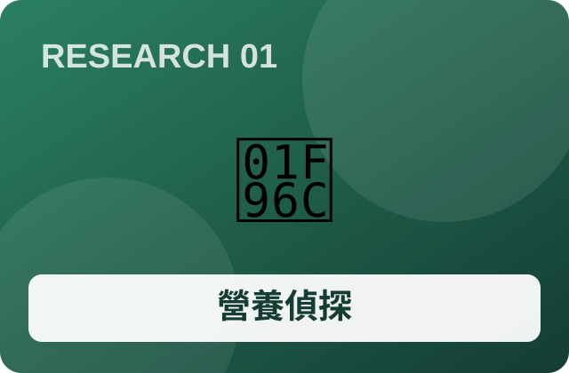
題目 01 · 生醫・統計
家庭營養偵探
研究問題：素食家庭的營養與預算能否兼顧？
展開研究拆解與驗收
執行流程：記錄14天飲食；食品成分資料查核；設計菜單；家庭試行
預期成果：營養分析儀表板、三組改良菜單
量化驗證：餐費、備餐時間、執行率
共同要求：事先設定假設、記錄失敗與成本、保留原始證據；結果尚未產生。
高中自主學習的完整構想地圖：從問題發現、跨領域探索、科學實驗，到真實社會驗證。這是一份可持續更新的研究規劃，不是已完成成果。
原始動機是素食家庭的日常生活：吃什麼、如何選購、學校是否友善、是否健康、是否環保、是否划算。後來延伸到植物材料、世界文化、AI與家庭陽台蔬果種植。
每個方向先問「為什麼值得研究？誰受到影響？目前證據是什麼？」再建立假設、提出可測量的預期成果，最後設計實作、對照、成本分析及反思。研究結果可能支持，也可能推翻原本的假設。
保留最初的 brainstorming 廣度。這些是問題領域，不等於正式選題；可從不同領域交叉組合。
心智圖由家庭與食品問題，延伸至校園社會、文化、材料、環境、資訊、財務及實證研究。每個群都可繼續新增問題、文獻與使用者訪談。
01–04：家庭、食品、校園、成本。建立資料、訪談與研究方法。
05–08：材料、乳化、保存、碳排。強調對照與可重複量測。
09–12：文化、地圖、創業、AI。讓成果接觸真實使用者。
13–16：植物、光照、節水、智慧化。可依興趣插入不同學期。
規劃原則是每學期保留四個候選、最後選兩題。新增13–16尚未指定學期，也沒有替使用者決定最終六題。
每題均保留研究問題、執行流程、預期成果與驗證指標。可依領域篩選，點擊卡片展開步驟。

研究問題：素食家庭的營養與預算能否兼顧？
執行流程：記錄14天飲食；食品成分資料查核；設計菜單；家庭試行
預期成果：營養分析儀表板、三組改良菜單
量化驗證：餐費、備餐時間、執行率
共同要求：事先設定假設、記錄失敗與成本、保留原始證據；結果尚未產生。
研究問題：包裝食品的素食成分如何可信辨識？
執行流程：訪談；整理標示法規；建立100件樣本；OCR與規則分類；盲測
預期成果：可標示不確定性的手機辨識原型
量化驗證：準確率、漏判率、查詢時間
共同要求：事先設定假設、記錄失敗與成本、保留原始證據；結果尚未產生。
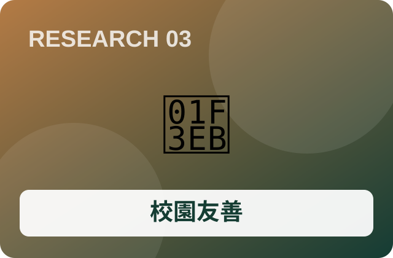
研究問題：校園供餐有哪些可改善的真實問題？
執行流程：取得許可；匿名問卷；訪談學生與供餐人員；設計改善；小規模試行
預期成果：需求調查與改善提案
量化驗證：滿意度、採用率、改善成本
共同要求：事先設定假設、記錄失敗與成本、保留原始證據；結果尚未產生。
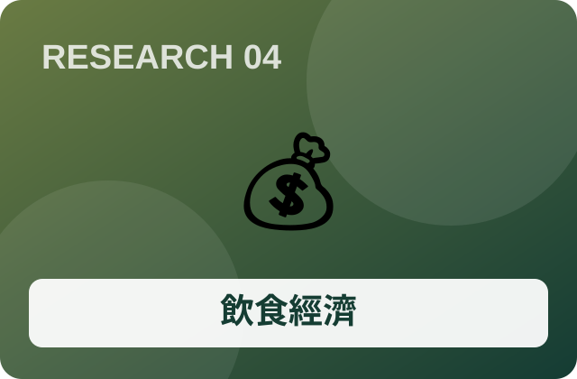
研究問題：營養相近的素食與非素食餐點何者成本較低？
執行流程：蒐集30–50項價格；建立10組比較；最佳化菜單；實際採買
預期成果：價格資料庫、採買決策模型
量化驗證：每餐成本、營養條件、預測誤差
共同要求：事先設定假設、記錄失敗與成本、保留原始證據；結果尚未產生。
研究問題：非動物皮革能否兼顧耐用與環境效益？
執行流程：研究材料；製作2–3組樣本；控制厚度；耐折與吸水試驗；製作卡套
預期成果：材料樣本、物性比較報告
量化驗證：耐折次數、承重、單位面積成本
共同要求：事先設定假設、記錄失敗與成本、保留原始證據；結果尚未產生。
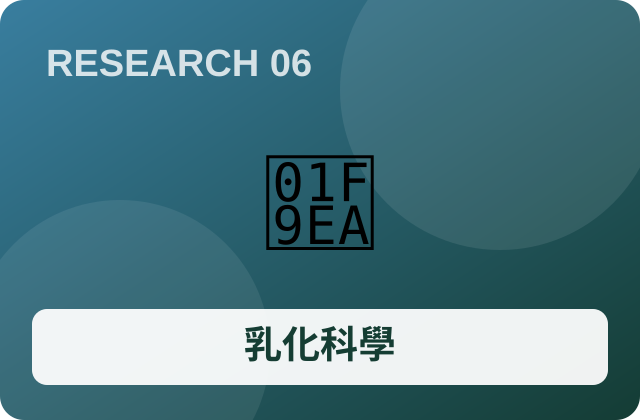
研究問題：如何辨識來源並研究乳化穩定性？
執行流程：成分溯源；研究乳化原理；非人體用樣本；溫度與分層測試；訪查供應商
預期成果：成分來源資料庫、乳化實驗紀錄
量化驗證：分層時間、pH、原料成本
共同要求：事先設定假設、記錄失敗與成本、保留原始證據；結果尚未產生。
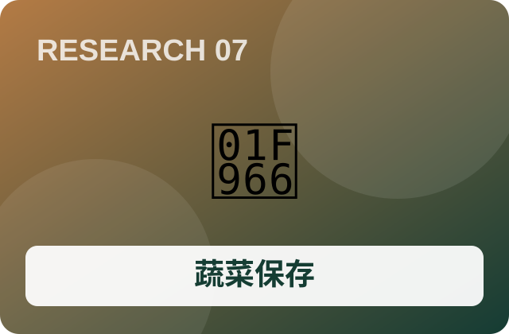
研究問題：如何減少家庭蔬菜浪費？
執行流程：建立剩食基準；比較保存條件；記錄溫濕度；設計提醒；家庭試行
預期成果：保存實驗、庫存提醒工具
量化驗證：剩食重量、保存天數、回本時間
共同要求：事先設定假設、記錄失敗與成本、保留原始證據；結果尚未產生。
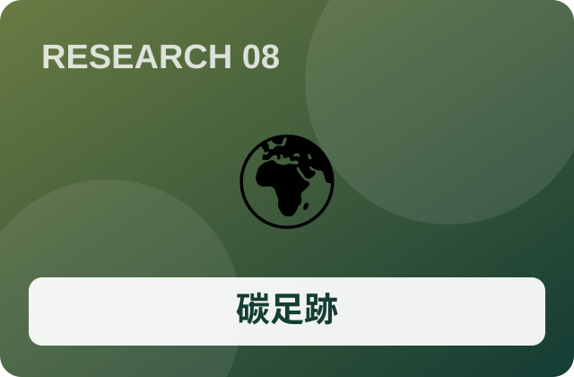
研究問題：植物性餐點的環境影響如何量化？
執行流程：研究LCA；整理排放係數；設定邊界；比較10組餐點；敏感度分析
預期成果：有來源的餐點碳排試算器
量化驗證：估計碳排、成本、不確定區間
共同要求：事先設定假設、記錄失敗與成本、保留原始證據；結果尚未產生。
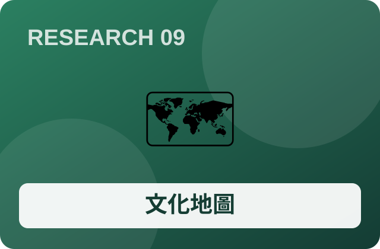
研究問題：宗教、地理與文化如何形塑素食？
執行流程：比較印度、臺灣等地；查核統計定義；跨文化訪談；雙語地圖展示
預期成果：互動世界文化地圖、雙語短片
量化驗證：展示前後理解、資料可信度
共同要求：事先設定假設、記錄失敗與成本、保留原始證據；結果尚未產生。
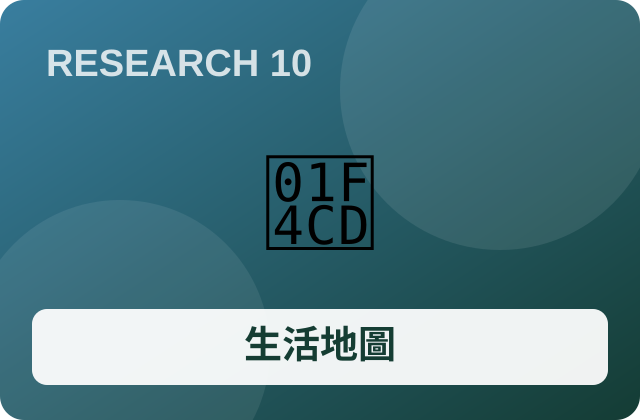
研究問題：如何更快找到可信的素食服務？
執行流程：使用者訪談；規劃資料格式；核對30家店；開發篩選；可用性測試
預期成果：手機地圖網站
量化驗證：找餐時間、成功率、資料更新率
共同要求：事先設定假設、記錄失敗與成本、保留原始證據；結果尚未產生。
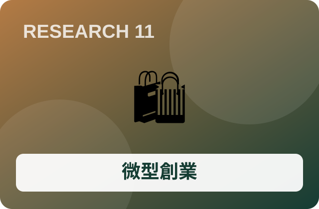
研究問題：植物性產品能否找到願意付費的使用者？
執行流程：需求訪談；設計安全原型；BOM；定價測試；校內展示或合法試賣
預期成果：產品、商業模式、損益試算
量化驗證：毛利、損益兩平、購買意願
共同要求：事先設定假設、記錄失敗與成本、保留原始證據；結果尚未產生。
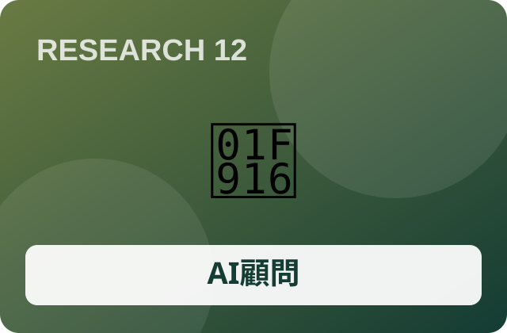
研究問題：能否整合營養、價格與環境資訊？
執行流程：整合前期資料；定義規則；建立最佳化模型；再評估AI；使用者測試
預期成果：可解釋的決策儀表板
量化驗證：約束符合率、時間、系統成本
共同要求：事先設定假設、記錄失敗與成本、保留原始證據；結果尚未產生。
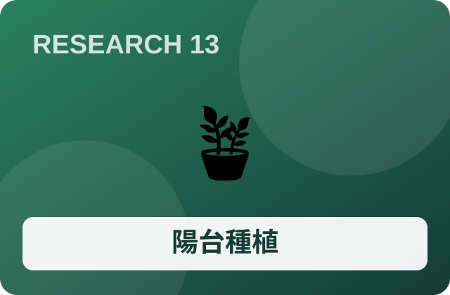
研究問題：家庭陽台哪些作物最適合不同日照？
執行流程：記錄日照與氣候；選青江菜與萵苣；同批播種；每週量測；收成比較
預期成果：陽台選種指南、成長資料集
量化驗證：存活率、鮮重、種植天數、成本
共同要求：事先設定假設、記錄失敗與成本、保留原始證據；結果尚未產生。
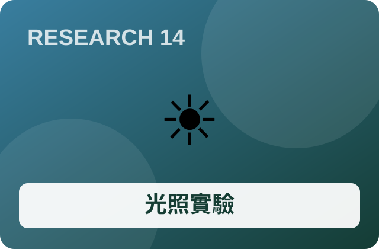
研究問題：人工光能否種出相近品質的蔬菜？
執行流程：統一育苗；自然光與LED對照；量測PPFD/DLI；記錄耗電；測鮮重與品質
預期成果：光照實驗、能源成本計算器
量化驗證：鮮重、葉色、電費、品質指標
共同要求：事先設定假設、記錄失敗與成本、保留原始證據；結果尚未產生。
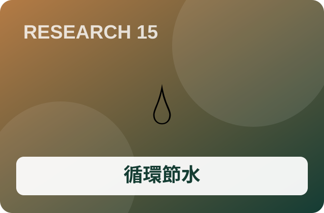
研究問題：毛細供水是否更省水省時？
執行流程：研究DIYGreen；建立傳統與儲水盆對照；同苗同土；記錄補水與工時；收成
預期成果：節水實驗、循環盆原型
量化驗證：克/公升、維護分鐘、單位成本
共同要求：事先設定假設、記錄失敗與成本、保留原始證據；結果尚未產生。
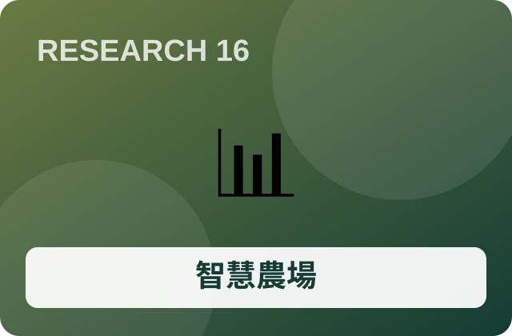
研究問題：智慧提醒能否降低管理負擔？
執行流程：人工紀錄；感測器校正；儀表板；規則提醒；累積資料後評估AI；對照測試
預期成果：感測儀表板、提醒原型、財務模型
量化驗證：產量、異常率、工時、設備回本
共同要求：事先設定假設、記錄失敗與成本、保留原始證據；結果尚未產生。
延伸自 DIYGreen 循環都市農園與家庭自種蔬果的構想。需實測日照、季節、光量、供水與設備條件，不能假設某一種方式必然較好。
先以青江菜、葉萵苣等短期葉菜開始，記錄日照與生長。
自然陽光、LED、必要時混合補光；量測鮮重、葉色、電費。
傳統盆與毛細儲水盆，記錄補水量、工時及產量。
先人工紀錄，再感測、提醒與資料分析，最後才評估AI。
第1週：量測陽台日照、溫濕度、可用空間。第2週：確定品種、種子批次、盆器及介質。第3週：播種並隨機分配實驗位置。第4–7週：每週固定量測、拍照、記錄用水。第8–10週：收成、稱重、記錄耗電與維護時間。第11–12週：統計、比較成本、反思並製作報告。
光量：DLI = PPFD × 每日照光秒數 ÷ 1,000,000。單位成本：總投入成本 ÷ 可食收成重量。節水效率：可食重量 ÷ 補水量。各指標須註明單位及量測限制。
每個題目都要事先設定可測量的成功指標，保留失敗、誤差及限制。財務分析至少記錄材料、設備、能源、工時與機會成本。訪談需尊重隱私；自製乳液不可在未完成安全評估前供人體使用或販售。
以上全部是「預期」成果。尚未實施的問卷、實驗、訪談、產量與數值都不應寫成已取得的結果。
本網站是研究規劃稿。網站、課程、學術資料與官方數據仍應在正式執行各題前重新查證；未經確認的成分、碳排、營養與價格不能視為定論。